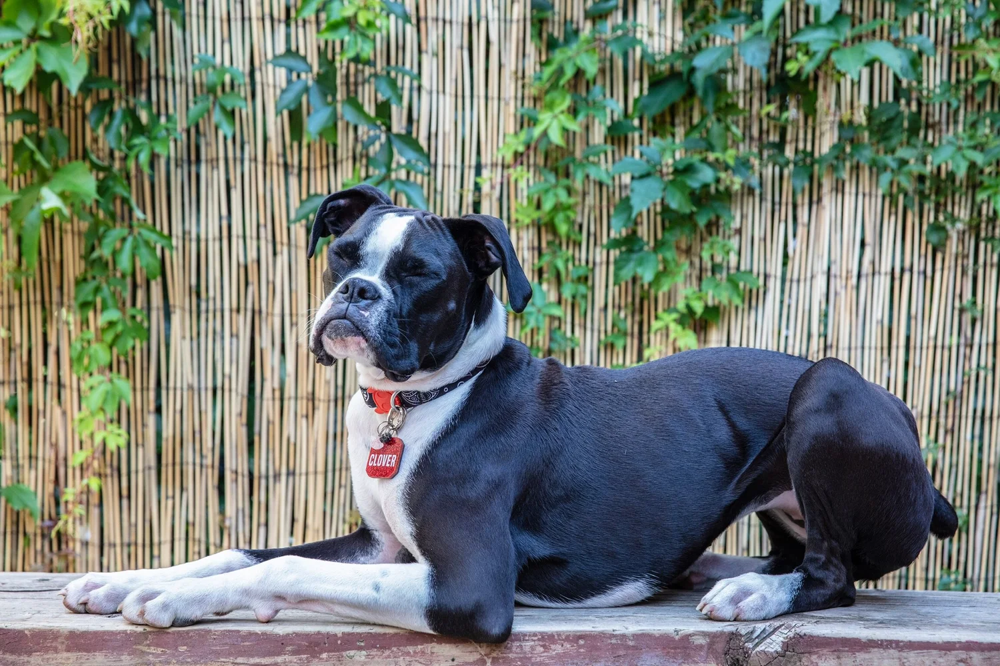

2017
Where it started
True North began rescuing dogs in 2017, operating under another organization's umbrella — a handful of volunteers determined to give dogs a second chance.
For the love of rescue
To save dogs in need by bringing them to New York where they can be placed into loving homes.

Who we are
True North Rescue Mission is a New York City-based, fully volunteer-run dog rescue. Our mission is simple: to save dogs in need by bringing them to New York where they can be placed into loving homes.
We are entirely foster-based, with no physical shelter. Every dog in our care lives in a loving foster home until they find their forever family. We're funded entirely by public donations and adoption fees — and we value diversity in every part of what we do.
Our history
What started as a small group of volunteers determined to give dogs a second chance has grown into a network of fosters, adopters, and supporters working together across the country and around the world.
True North began rescuing dogs in 2017, operating under another organization's umbrella — a handful of volunteers determined to give dogs a second chance.
In 2021 we registered as a corporation under our current name, True North Rescue Mission, and set out to grow our foster and adopter community.
We are a 501(c)(3) non-profit organization (status pending), still 100% volunteer-run and foster-based — with no physical shelter to this day.
Across the country & beyond
We partner with rescues and shelters near and far to bring dogs in need to New York — and into loving homes.
Pulling at-risk dogs from overcrowded shelters and transporting them north to safety.
Working with regional partners to give Southern shelter dogs a second chance in New York.
Helping the island's stray and surrendered dogs — known as "satos" — find forever families.
Based in Harbin, China, we're proud to be their only East Coast partner — rescuing dogs from the meat trade and giving them a chance at a safe, loving life.
Fostering is the heart of what we do
Because we have no physical shelter, every dog we save depends on a foster family. Whether for a weekend or until adoption, you make the next rescue possible.
Join the mission
Saving one dog will not change the world — but for that one dog, the world changes forever. Here's how you can be part of it.
Give a rescued dog their forever home and start your own happy tail.
Give a dog a safe place to land while they wait for their family.